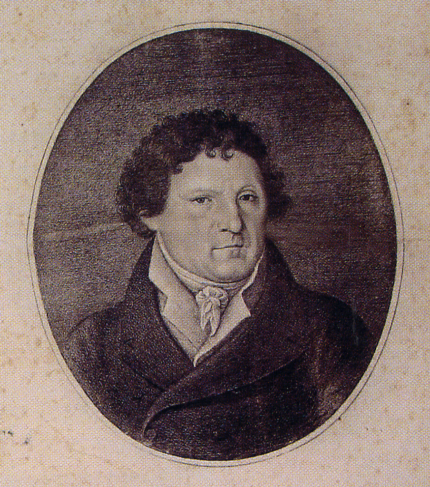

La collection Judica
Les recherches passionnées de Gabriele et la motivation profonde de Gaétano Judica sont à l’origine de la collection exposée au musée du Palais Cappellani. Celle-ci comprend de nombreux matériaux d’époques différentes, mais dont nous ne connaisssons l’origine que de certains d’entre eux, ainsi qu’en témoigne l’inventaire rédigé en 1931. Alors qu’une grande partie de ces matériaux provient des fouilles réalisées par Gabriele Judica, d’autres ont été ajoutés, comme ceux de la collection Ferla, famille qui détenait des propriétés dans le territoire de Monte Casale (l’antique Kasmene), ou acquis comme ceux du territoire de l’antique Leontinoi. Nous savons également que Gabriele avait eu la responsabilité de superviser les recherches sur le territoire de Modica et de Caltagirone, d’où il est possible que proviennent certains d’entre eux. Une partie des objets est très certainement liée à des rites funéraires comme le laissent penser leur typologie et leur état de conservation (il s’agit de pièces complètes).
La collection comprend des matériaux qui se situent chronologiquement entre la préhistoire et la période romaine-bysantine tardive. La plus grande partie est constituée d’ouvrages en céramiques, parmi lesquelles il faut remarquer celles de la période archaïque avec des vases importés de Corinthe, de Sparte, d’Etrurie, de Ionie ou encore d’Athènes. La production en provenance de l’Attique n’a cessé d’être importante et elle est largement présente dans la partie de la collection consacrée au V° siècle av. J-C. Impressionnant est le nombre de vases datant de la période hellenistique, qu’il s’agisse de production siceliote ou à peinture noire. La production coroplastique est considérable et diversement représentée entre le VI° siècle av. J-C et la période hellénistique. Moins nombreuse est la céramique d’époque romaine représentée surtout par des lampes à huile. La collection comprend aussi des objets en bronze, des monnaies et des bijoux ainsi qu’une série intéressante de bas-reliefs avec des inscriptions.
L'histoire de la collection Judica
Décédé sans héritiers directs, le jour même de sa disparition, ses biens furent mis sous séquestre y compris le musée. Son neveu César, fils adoptif, proposa au Régent Demanio d’acquérir le musée. Mais des batailles judiciaires se poursuivront longtemps, ce qui conduira à la détérioration du palais-musée et au démembrement de la collection entre les héritiers.
Au début du XX° siècle, on doit à l’attention de l’un des ses descendants, Gaetano Judica, la recomposition partielle de collection, augmentée d’acquisitions ultérieures de matériaux dont certains en provenance du territoire de Lentini. A la mort de Gaetano Judica, la collection fut divisée entre les héritiers ; la région de la Sicile, pour en éviter le démembrement et la dispersion, a mis sous tutelle la collection dans son ensemble. En raison de défaillances financières, la collection fut mise sous la protection judiciaire de la Direction des Biens Culturels et de Ecologiques de Syracuse qui l’achètera en plusieurs lots, entre les années 80 du siècle précédent et 2013, pour l’exposer dans le Musée du Palazzo Cappellani, la restituant ainsi à l’exploitation dans le lieu où elle s’était formée et qui constitue un témoignage de son histoire.
Gabriele Judica
D’origine espagnole, la famille Judica est présente à Palazzolo dès le XVII° siècle et acquis prestige et pouvoir vers la fin du XVIII°, quand Barachiele et Michele Judica entrent en possession par alliance, des biens de la riche famille Danieli. C’est à Don Michele que revient, à la mort de Barachiele, d’enrichir la famille et de la rendre influente, d’acquérir le noyau du fief de Baudi, qui lui vaut le titre de « baron », et dont il augmenta avec le temps les propriétés. Des noces de Don Michele et de Donna Carmela Danieli naît, le 9 aoùt 1760, un premier enfant, Gabriele, qui poursuivit l’activité de son père, portant à son terme en 1818 la construction du palais familial sur l’artère principale de la ville. Passionné par l’histoire antique de sa région, son nom est lié à la découverte de l’antique Akrai. Les premières recherches, en 1809 sont celles de la nécropole de la colline d’Orbo et des Santons ; de la Pinita en 1810 et 1813 ; des latomie de l’Intagliata et de l’Intagliatella en 1810, 1813 et 1815 ; des temples funéraires (ferali) en 1817 ; et enfin celles qui ont permis de mettre à jour d’abord le bouleutérion en 1820, puis le théâtre en 1824. Il publia les résultats de ses recherches dans son œuvre « Les antiquités d’Acre ». Esprit réellement éclairé dans le champ culturel de la recherche d’antiquités de la seconde moitié du XVIII° siècle, à travers les enquêtes réalisées à ses propres frais, connaissant des difficultés de nature financière et souvent en conflit avec les représentants de la culture dominante et des institutions culturelles de son époque, il réussit à rassembler une imposante collection de matériaux qu’il conserve dans son palais situé sur l’artère principale de Palazzolo Acreide. Celle-ci suscite rapidement l’intérêt des voyageurs contemporains, elle constitue un vrai musée. Il assuma diverses charges politiques au niveau local, fut généreusement mécéné ; il fut aussi nommé Gardien Royal des Antiquités de Noto. Il mourut le 3 mai 1835.